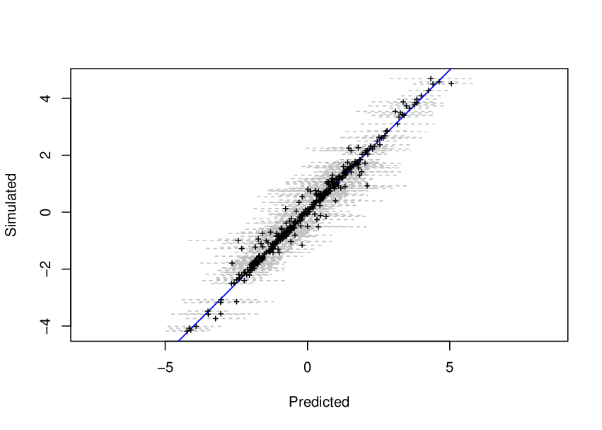

Here we focus on a similar situation of the misalignement model example in the last Chapter of [Blangiardo and Cameletti, 2015]. Here we extend the model to consider a a spatially structured error. We also have a response y and a covariate c and the misalignment. The R source for this file is available at http://www.math.ntnu.no/inla/r-_inla.org/tutorials/spde/R/spde-_tutorial-_measurement-_error.R
We consider the following model c
where wi is a covariate. Considering a GF for m, we have here a kind of measurement error models, [Muff et al., 2013], where the error is assumed t o have spatial structure.
For y, we have
where αy is an intercept, βc is the regression coefficient on the predicted value for c xj is an zero mean random field and ei is a error that remains unexplained on y such that ei ~ N(0,σy2) measures the.
A particular case is when we don’t have the x term in the model for y. Another case, is when σc2 = 0 and we don’t have white noise in the covariate, i. e., the covariate is considered just a realization of a random field.
Differently than the joint model in Chapter 8 of [Blangiardo and Cameletti, 2015] we do need to define a term that express the linear predictor of c and then copy it on the response linear predictor. We need an extra equation to do it

To fit ω we need o use the faked zero observations strategy, [Ruiz-Cárdenas et al., 2012]. So, we rewrite this as

and define a Gaussian likelihood with fixed high precision to fit it.
We now draw a sample from this model. First, we simulate a set of locations
Let the parameters of both random fields m and x:
We need the simulation of m in both set of locations. To do that we use the rMatern function available in http://www.math.ntnu.no/inla/r-_inla.org/tutorials/spde/R/spde-_tutorial-_functions.R.
and with the following parameters
we do simulation of the covariate and response with
First we build a mesh taking into account the true value of the smaller range process
We will use the same mesh and the index vectors for both spatial effects will have the same values.
We do simulations of the covariate on the locations of the response just to simulate the response. But, in the problem that we want to solve in pratice, we don’t have the covariate on the response locations. The misalignment implies in different predictor matrix for response and covariate.
We have to use three likelihoods. One for the response, one for the covariate c and one for the faked zero observations. It is easier to buil one stack for each one and join they to fit the model
Defining the SPDE model considering the PC-prior derived in [Fuglstad et al., 2017] for the
model parameters as the practical range,  ∕κ, and the marginal standard deviation.
∕κ, and the marginal standard deviation.
For the estimation of the regression coefficient of c on y we use the copy feature. We set a N(0,5) prior to βc when defining the model as
and fit the model with
The true values of the intercepts and the regression coefficient of w on c and the summary of its posterior marginal distributions
The true values of the precision of y and the summary of the posterior marginal distribution
The summary for the random field parameters and the regression parameter of c on y is shown by
We see the posterior distribution of regression parameters on Figure 3.1.4 generated with comands below
We see on the Figure 3.1.4 that the posterior distribution covers the true values of all the parameters.
The posterior marginals for the random fields is shown in Figure 3.1.4 generated with comands below
We see on Figure 3.1.4 that the posterior marginal distribution of the all parameters of both spatial process cover the true values well.
Another interesting result is the prediction of the covariate on the response locations. We have the simulated values of m on that locations. So, we are able to see if the predictions are good.
The predictor matrix used on the estimation proces maps the nodes from mesh vertices to the data locations. The first lines of the predictor matrix for the covariate can be used to access the predictions on the locations of the covariate. Also, we have the predictor matrix used to the response. The last lines of this matrix that maps the mesh vertices to the response locations. Because we have the covariate simulated in the both set of locations, we use the correspondent parts of both predictor matrix to project the posterior mean and the posterior variance on the locations.
We get this matrix by
and the posterior mean and posterior standard deviations with
With this aproach for this both posterior summary can be an aproximation to 95% credibility interval, with normally supposition. We see it this results with comands below

on the Figure 3.1.4. The blue line represents the situation where predicted is equal to simulated.
The R source code for this example is available at http://www.math.ntnu.no/inla/r-_inla.org/tutorials/spde/R/spde-_tutorial-_coregionalization.R
In this Chapter we present a way to fit the Bayesian coregionalization model proposed by [Schimdt and Gelfand, 2003]. A particular case was considered as a covariate joint modeling in Chapter 8 of [Blangiardo and Cameletti, 2015]. Later in this tutorial we do consider a generalization for the space-time case, see Section 5.4. Also, the approach implemented in R-INLA allows completelly missalignment for all the outcomes, it only need the same domain.
The case of three outcomes is defined considering the following equations


where the zk(s) are spacetime correlated processes and ek(s) are uncorrelated error terms, k = 1,2,3.
In order to fit this model in R-INLA we consider a reparametrization. This reparametrization is to change the second equation as follows
![y3(s) = α3 + λ2(α2 + λ1α1 )+ λ2λ1[z1(s)+ e1(s)]+ λ3 {α2 + λ1 α1 + λ1[z1(s)+ e1(s)]+ z2(s) + e2(s)} + z3(s)
= [α3 + λ2α1 + λ3(α2 + λ1α1)]+ (3.1)
(λ2 + λ3λ1 )[z1(s)+ e1(s)]+ λ3[z2(s)+ e2(s)]+ z3(s)+ e3(s)](spde-tutorial66x.png)
This model can be fitted in R-INLA using the copy feature. In the parametrization above it is needed to copy the linear predictor in the first equation to the second and the linear predictor in the second equation to the third.
We will use the copy feature to fit λ1 = β1. In the second equation and λ2 + λ3λ1 = β2 will be the first copy parameter in the third equation. A second copy will be used in the third equation to fit λ3 = β3.
Parameter setting
It is not required to the spatial locations to be the same for each process to fit this model in R-INLA. We will consider a different set of locations for each outcome.
We can use the rMatern() function to simulate independent random field realizations for each time. This function is available in the file at http://www.math.ntnu.no/inla/r-_inla.org/tutorials/spde/R/spde-_tutorial-_functions.R.
In order to build the second and third outcomes, we do consider samples for the random field in the first outcome at all the locations and for the random field on the second outcome in the second and third set of locations.
Then we define the observation samples
We wil build only one mesh to fit all the three spatial random fields. This makes easier to link it across different outcomes at diferent spatial locations. We will use all the locations
One can also use only the domain to build the mesh. However, since the sparsity of the resulting total precision matrix also depends on the sparsity of the projector matrices, having the points as nodes in the mesh will gives a projector matrix a bit sparser.
Defining the SPDE model considering the PC-prior derived in [Fuglstad et al., 2017] for the
model parameters as the practical range,  ∕κ, and the marginal standard deviation.
∕κ, and the marginal standard deviation.
This object model can be considered for all the random effects, if we do want to consider the same prior for the hyperparameters.
For each of the the copy parameters we have a N(0,10) prior distribution
Define the formula including all the terms in the model.
Define the projector matrix for each set of locations
Organize the data in three data stack and join it
We consider a penalized complexity prior for the errors precision, [Simspon et al., 2017],
We have two hyperparameters for each spatial effect, one for each likelihood and three copy parameters, which is also considered as hyperparametes. That is 12 hyperparameters in total. To make the optimization process fast, we use the parameter values used in the simulation as the initial values
We will consider the empirical Bayes approach instead of integrating over the hyperparameters. It is just to avoind to do computations over the 281 configurations of the hyperparameters in the CCD integration strategy. It will saves a bit less of one minute in computational time when using 6 threads. Fitting the model
Summary of the posterior marginal density for the intercepts
Posterior marginal for the errors precision
Summary of the posterior marginal density for the copy parameters:
Look for the random field parameters for each field. The practical range for each random field
The standard deviation for each random field
We can plot the posterior mean for each random field projected at the data locations. We can see it in Figure 3.2.3. It seems that the method was reazonable well having covered the parameter values used to simulate the data.
The R source for this file is available at http://www.math.ntnu.no/inla/r-_inla.org/tutorials/spde/R/spde-_tutorial-_linear-_predictor-_copy.R
In this Chapter we show how to copy part of a linear predictor. That is two or more outcomes (or same outcome from different sources) are modeled jointly. In this case there are effects which are common in the linear predictor for more than one outcome.
Suppose we have data collected at the locations s, y1(s), y2(s) and y3(s). Consider a case were we have the following three observation models
where we have a SPDE model at the mesh nodes b(s0) with A(s,s0) being the projector matrix, ϵj, j=1,2,3, are observation errors considered as zero mean Gaussian with variance σj2. By this setting we have a linear model for each outcome. We can see that a common effect is scaled from one linear preditor into another, where β2 and β3 are the scaling parameters.We can define the following model terms
By this, this example is about showing how to copy η0 into η2 and η1 into η3 in order to estimate β2 and β3.
We have assumed all the three observation vectors, y1, y2 and y3 to be observed at the same locations.
First of all we define the set of parameters in the model. for βj, j=0,2,...,3 as follows
Then, we define the variance errors as
For the b(s) process, we consider a Matérn covariance function with κb, σb2 and ν = 1 (fixed).
To realize the process we consider a set of locations as follows
and draw one realization of the Matérn process considering the rMatern() function available in the file at http://www.math.ntnu.no/inla/r-_inla.org/tutorials/spde/R/spde-_tutorial-_functions.R
This sample can be visualized using
Additionally we have to define a covariate. We just sample it as follows
Them we build the linear predictors as follows
and have the observations as follows
There are more than one way to fit this model using the R-INLA package. The main point is the need to compute η0(s) = β0 + β1x(s) and η1(s) = β0 + β1x(s) + A(s,s0)b(s) from the first observation equation in order to copy it to the second and third observation equation. So, one has to define a model that computes η0(s) and η1(s) explicitelly.
The way we choose is to minimize the size of the graph generated by the model, [Rue et al., 2017]. First, we have that
where only A(s,s0), x(s) and y1(s) are known. For the η0(s) and η2(s) terms we consider an independent and identically distributed (’iid’) model with low fixed precision. With this high fixed hight variance, each element in η0(s) and η1(s) can assume any value. However, it will be forced these values to be β0 + β1x(s) and β0 + β1x(s) + A(s,s0)b(s0) by considering a Gaussian likelihood for the ’faked zero’ observations with a hight fixed precision value (lower fixed likelihood variance). For details and examples of this approach see [Ruiz-Cárdenas et al., 2012], [Martins et al., 2013] and Chapter 8 of [Blangiardo and Cameletti, 2015].Second, since we have only Gaussian likelihood for the observed data, one can can include ϵj (j=1,2,3) in the linear predictor and fix a high likehihood precision. By this setting, we have only Gaussian likelihood with high fixed precision: only one likelihood.
In order to fit the b(s) term we have to set a SPDE Matérn model. For that, we set a mesh
define the projector matrix
and the SPDE model
to be used.
The data has to be organized using the inla.stack() function. The data stack for the first observation vector is just
where the e1 term will be used to fit ϵ1.
Them the stack data for the first ’facked zero’ observations
which has the negated fist observation vector as offset.
The stack for the second ’facked zero’ observation is
The stack for the second observation vector now considers an index set to compute the η1 copied from the first ’facked zero’ observations.
In similar way, we have the third observation stack including an index set to compute the η2 copied from the second ’facked zero’ observations.
To fit the model we join all the data
The prior distributions will be the default for most of the parameters. For the three variance errors in the observations we have set the PC-prior as follows
And consider it when defining the model formula
The model is them fitted with
We can see the fixed effects β0 and β1 with
The β2 and β3 parameters are
The posterior marginal distribution of the standard deviation for ϵ1, ϵ2 and ϵ1 can be visualized with
Finally, the random field parameters posterior marginals can be visualized with